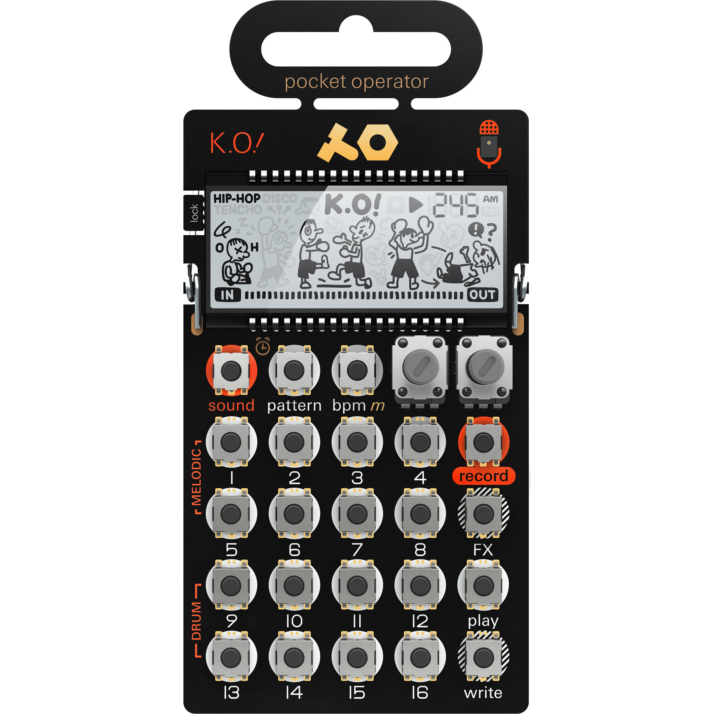

What's a pocket operator?
A pocket operator is a small music making device by Teenage Engineering that looks like a pocket calculator. There are several different models, each with their own strengths and features for making different types of music on the go. There are pocket operators for making sampled hip hop, boom-bap, chiptunes, sub-bass, synths, drum machines, and more. 